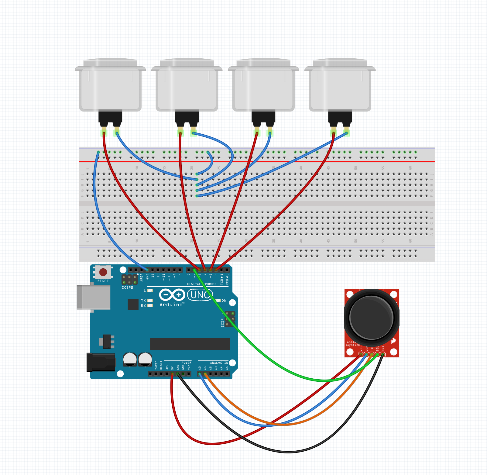

NodeJS: Day 3
NodeJS: Day 3
NodeJS: Day 3
NodeJS: Day 3
Grab the code here:
http://bit.ly/2zBvHXI
- FaceOSC
- Building an Arduino interface
- Connecting Arduino to NodeJS
- Interactive P5 Sketch
- Hackers Den!
Topics for Today:
FaceOSC

try faceosc
Downloadcd faceosc & npm install & node app.js
Building an Arduino Interface
Cut a setion of rainbow wire with 8 wires about 1/2 a foot
One one side seperate the wires about 1/2 inch
One one other side seperate the wires about 3 inches
Cut the wires so they match up to your button holes with some slack
Feed them through the button holes in seperate pairs
Strip the ends and solder them to the button leads odd on one side even on the other
Strip the other sides of the wires
Solder the odd wires to a pair of 4 header pins
Solder the wires to a pair of 4 header pins
Double check the wiring
Snap in the buttons
Glue the case together
Connect buttons and joystick:
One side of the buttons connect to GND
The other side connect to digital pins 2,3,4,5
Joystick Connections
GND to GND
5V to 5V
5V to 5V
VRX to A0
VRY to A1
SW to Digital Pin 6
Double check the wiring
Snap in the buttons
Glue the case together
Upload _4buttonAndJoystick to Arduino
The Node Serialport Module
Open serialsimple in your text editor
Edit line 3 to match the serial port
cd serialsimple
npm install
node index.js
Open serial_ws in your text editor
Edit line 8 of index.js to match the serial port
cd serial_ws
npm install
node index.js
open localhost:3000 in your browser
Open serial_ws_inter_chart in your text editor
Edit line 8 of index.js to match the serial port
cd serial_ws_inter_chart
npm install
node index.js
open localhost:3000 in your browser
Open interactive_p5js in your text editor
Edit line 15 of index.js to match the serial port
cd interactive_p5js
npm install
node index.js
open localhost:3000 in your browser
Open interactive_p5js_GL in your text editor
Edit line 15 of index.js to match the serial port
cd interactive_p5js
npm install
node index.js
open localhost:3000 in your browser
Form 3 teams
Make a copy of one of the templates
Build out an interactive project
Some themes if you needPresent at 3:30
Homework:
Make your own interactive for next week